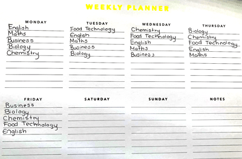
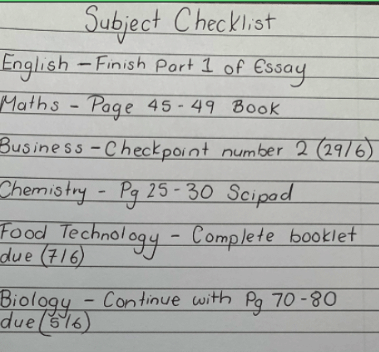

Tips For High School
High School is a scary and exciting time for kids to start the next journey of schooling. For this page on Tips for High School, I will be providing tips for students coming into high school. I will be providing general tips for high school and some more specific tips that I have learnt from my own experience at high school. Some basic tips that I can give to students going into high school is to
Visit the school that you are going too before your first day. This will help the student start to feel more comfortable with the surroundings of their new school and help ease some nerves.
Don't be late to class. This is important for students to understand that in high school they want to maximise your learning and how much they teach you and being late to class will take away from your learning and you may miss out on crucial learning for that subject.
Create a planner to keep up with assignments and homework. This will help you stay organised and on top of your school work and can lead to being less stressed.
Get involved in extracurricular activities, this will allow for you to meet new people as in High School for students coming in, you will not always not know people coming into high school and participating in extracurricular activities is a great way to meet friends.
Making friends is important in high school as friends are a big part of students' lives but it is important you make friends in your classes as well because having friends in classes makes it a more fun and enjoyable time but also you can ask them questions if you are stuck.
Ask Questions in class. This will help further develop the students learning and they will be much more likely to gain a higher grade then someone who does not ask questions and understand what they are doing.
Do your Homework. I know we hear this one alot but I have good reasons why I recommend doing your homework at high school. Doing your homework will reinforce what you are learning in class from that lesson and this can lead to higher grades from test as a reflection from putting in the work to achieve that grade.
Over my time at Westlake Girls, I have found many different things that I feel can help students going into high school with specific tips that I have found along the way of my 5 years being at Westlake Girls. This includes
Organising a weekly timetable for your subjects and what you need to do for each subject. This can also include a weekly timetable for extra curricular activities also as a way to manage time better by knowing what is happening when and what time.
Sleep. It is important that you get enough sleep each night for the next day of school as you wont take in much information if you are constantly tired at school which I have found over my time at high school, that I need to manage my sleep better to get the most out of my learning each day.
Getting familiar with classes and timetable. This is something that at the start of each year when I got my new timetable, I would go around the school to find where all my classes are and memorise my timetable which made each year easier to transition from as I knew where all my classes where for each subject.
One important advice that I can give to students going into highschool and throughout their high school experience is to have a folder where you can put all your documents and handouts that the teacher gives you. As students study several subjects at high school it becomes easy to just put documents in your bag and then forget about them. From my experience in highschool teachers don't just give you documents or sheets of paper because they want to. They do it so it can help you further develop your learning and I have found over my 5 years at highschool that it is so important to have some sort of folder which helps me keep all my documents organised from each subject as at the start of my high school I was the most unorganised person and that made it a very stressful time to start with which I why I highly recommend as a tip to get a folder to organise all your files for each subject.
In High School, It is important that we don't get infatuated with the idea of being the perfect student and getting perfect grades. For a long time during high school I was so invested in getting these high grades that it took away from hanging out with my friends and enjoying high school. It is important that you have a balance at high school with school work, friends, sports etc. By having a good balance between school work and extracurricular activities it will mean that you are much happier to be at school and can enjoy being there.
This tip is specific to when studying for exams during highschool. It is important that when at high school you have a plan for your studying because without this plan, you have no direction of what you want to study. I found it helpful to create a plan each week of how much time I want to study for each subject and what content I wanted to focus on. I found that having the plan in front of me made me more motivated to do it and by getting the work done the grades reflected the effort that was put in.

